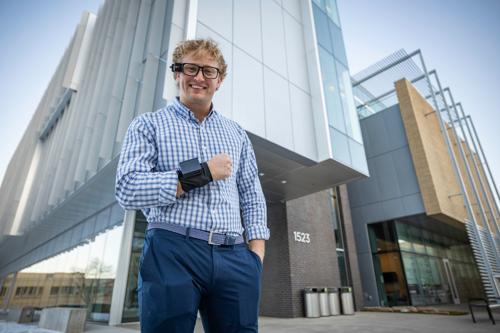

Métodos y dispositvos anteriores que mejora:
Ayuda a otra persona: En algunas situaciones, las personas con discapacidad pueden necesitar ayuda de otra persona para poder interactuar. Con ALEYE se pretende reducir esa dependencia.
Sistemas de comunicación háptica: Antes de este dispositivo ya existían proyectos de investigación sobre el tema.
Dispositivos de sustitución sensorial: Tecnologías que transforman información procedente de un sentido en estímulos que pueden percibirse a través de otro.
Historia y evolución:
Cinturón háptico: Sistema que utilizaba una cámara colocada en una gorra para captar las expresiones faciales de otra persona y después con un cinturón transmitía vibraciones. Cinturón Háptico
Investigación de dispositivo portátil para la comunicación no verbal háptico: Investgación sobre un dispositivo portátil que se colocaba en la mano y en el antebrazo. Investigación Articulo IEEE
Investigación CHAT System: Investigación sobre un sistema portátil e inalámbrico que permite transmitir información no verbal, se centra en investigar cómo transmitir expresiones mediante el tacto. CHAT SYSTEM
HapWare ALEYE: Está compuesto por una cámara, inteligencia artificial y una pulsera háptica. Este dispostivo se diferencia del resto de dispositovs hápticos, ya que utiliza una cámara e inteligencia artifical para reconocer las expresiones faciales y gestos de las personas con las que interactuamos, transformándolos en vibraciones que el usuario siente en la muñeca.
Comercialización
Desarrollada por Jack Walters y Bryan Duarte, uno de los pocos doctores ciegos en Ciencias de la Computación.
Las primeras entregas se preveen para principios de 2027.


El dispositivo se encuentra en preventa, con un precio oficial de 359 dólares. El precio normal será de 449 dólares, ya que ahora cuenta con un 20% de descuento.
Video de prueba: Enlace video prueba